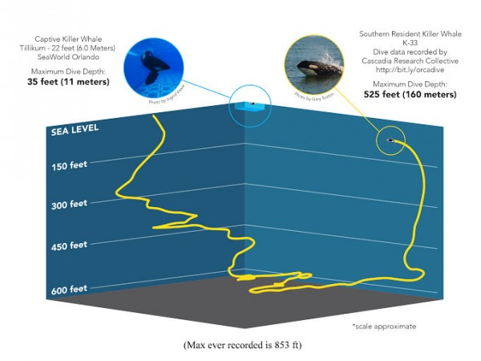
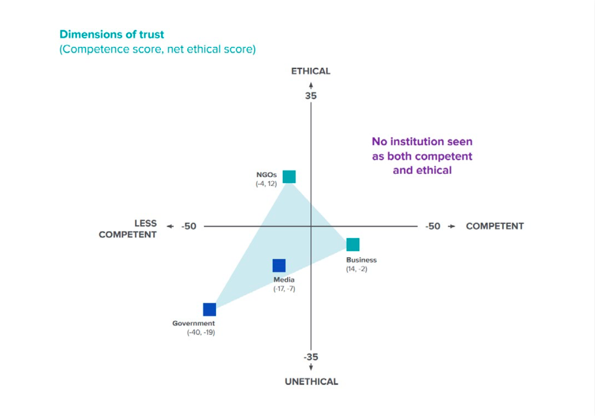

Kiska Captivity Stats
Age: Years
Time in captivity:
Years -
Days -
Hours -
Minutes - Seconds
Time in solitary confinement:
Years -
Days -
Hours -
Minutes -
Seconds
Number of orcas dead at Marineland Canada: 20
Number of those that were her own calves: 5
Can you imagine what it might feel like?
Cruel and Unusual
There are at least 54 known orcas in captivity across the globe, 104+ have perished in captivity, and
counting..
Whales Save Whales. Vote with your wallet.

Source: SeaWorld Fact Check / Whiting 2015
In the media
Watch the critically acclaimed film The Walrus and the Whistleblower [link] produced by Nathalie Bibeau if you are interested in Phil’s story. It will show you the pain and passion that drives Phil (and many other activists) on their mission to #SaveSmooshi, #FreeKiska and beyond.
Phil has appeared on The Joe Rogan Experience 5 times: #425 (2013), #743 (2016), #1076 (2018),
#1297 (2019), #1590 (2021).
And many other podcasts, news stations, publications, and documentaries.
#WhalesSaveWhales
It’s not only orcas, but belugas, dolphins, seals, sea lions, walruses, and many others…
Phil Demers has a long history with Marineland, where he became the surrogate mother to Smooshi the walrus. Phil ended a 12 year tenure at Marineland to blow the whistle on their increasingly unhealthy conditions: water quality issues, short staffing, animal neglect & cruelty. Marineland in turn has dragged out a frivolous lawsuit against Phil for nearly a decade (and successfully silenced many others from speaking out).
With gritty perseverance, and support from friends, family, and community, Phil has continued sparring against Marineland. Finally after 9 years of delays, expenses, and bullying, Marineland will be forced to attend court this year of 2022.
Check Phil’s gofund me page (here), and his personal ETH & BTC wallets here:
-
BTC (Phil Demers personal wallet): 3BRgesrjFFeQYDRNPERyzo5DehMmpJMd5R [COPY] -
ETH (Phil Demers personal wallet): 0x5034eF24d50c55148326cFFa54B27eF1c2d73f13 [COPY]
.jpeg)
.jpg)
.png)
.jpeg)
.jpg)
.jpg)
.jpg)
.jpg)
.jpg)
.jpg)
Various sources: Marineland Demonstrations, Phil, & Smooshi

Source: Messari Report 2022 / a16z: How to Win the Future
MORE OBSTACLES
Institutional trust is perceived extremely low, and for good reason. We are used to seeing corruption, collusion, and obfuscation from nearly all institutions - so much so that literally no institutions are seen as both competent and ethical. Even ethical Non-Governmental Organizations (often not-for profit entities that are active in human & animal rights, environmentalism, health, humanitarianism, etc) struggle to operate competently.
With best intentions it is still extremely common to see mismanaged funds, high take rates for CEOs/leaders, high overhead costs, poor planning and execution, leaving only a small portion of invested dollars reaching their target.
Donate to a transparent community driven causeSolutions
We are in the midst of a revolution. Cultural, technical, financial, governmental, -historical!
DAOs, NFTs, DeFi, Web3, - do you know these terms? - trustless, permissionless, censorship resistant - what are these concepts? - smart contracts, generative art, machine learning & AI - are we already in the metaverse?
There are transparent, decentralized, credibly neutral, durable, networks now at our disposal. Ethereum and it's Turing-complete programming language Solidity has been battle tested for over 6 years now, and developers continue to grow at all time high rates. Bitcoin has survived and grown over 13+ years and has now been adopted as legal tender in El Salvador - it's only a matter of time before other countries follow suit.
These new blockchain technologies are not only enhancing the world of finance, but also global coordination at large. [EthBot Begins Comic] Decentralized Autonomous Organizations are a new unlock for humanity, and are quickly engulfing the world. [2021 Wrap-up by Orca Protocol.]
If this is all familiar to you - maybe you've already made it ? maybe you're a crypto-whale, and if you are in a position of abundance let this be your call to action; real world whales and animals need support, please help “web3/crypto/NFTs/DOAs” become the solution by donating, participating, and spreading the message.
#WhalesSaveWhales
Mission
WhalesSaveWhales intends on solving the captivity dilemma. The animals need somewhere to go, sea-side sanctuaries need to be built and need ongoing maintenance, and aquariums need to release their tortured captives.
Our first goal is the grow and preserve our treasury. Expenditures will be made in the most thoughtful,
effective, and transparent ways possible (via a DAO).
Where will a ground-up benevolent decentralized autonomous organization take us?
We envision:
- A community that spreads knowledge, is engaged in activism for the betterment of animals and our planet, while being kind and helpful
- Partnerships with relevant artists to enrich the artists, our community, and our cause itself #WhalesSaveWhales
- A thriving treasury, generating interest and ongoing royalties to sustain healthy expenditures
- wsw_dao funds internal proposals and outside organizations for specific, actionable, objectives related to our purpose
- wsw_dao’s “grail” goal is to build (or help build) real world seaside sanctuaries for captive animals, then to empty the tanks into the sanctuaries
- There will be need for more than one sanctuary, and much work to be done to purchase (or lobby for confiscation) the animals, and physically move them
- In an optimistic and even further outlook, in a post-captivity world, we may look to create Emergency Rescue Teams to work with wild animals, as well as turning our focus to Ocean Cleanup, clean energy initiatives, etc

Source: The Whale Sanctuary Project. WSP has proposed the construction of a 40-hectare enclosure in Port Hilford Bay.
Link Copied!
Whales Save Whales. Vote with your wallet.
Donate ANY amount (in ETH) to earn the 2022 WSW POAP “bitcoin solar
powerhouse <> eth ocean vibes”
(POAP holders may be selected on future whitelists)
WhalesSaveWhales Multi-Sig Wallets:
ETH: 0x5034eF24d50c55148326cFFa54B27eF1c2d73f13
[COPY]
BTC: 3BRgesrjFFeQYDRNPERyzo5DehMmpJMd5R [COPY]
*Multi-Sig wallets require multiple signatures to move funds, they are the treasury-management standard for DAOs. WSW wallets are controlled by Phil (@walruswhisperer) and co-founder @madlog1c, with growth and preservation as our initial priority. Additional signors will be added as we grow.